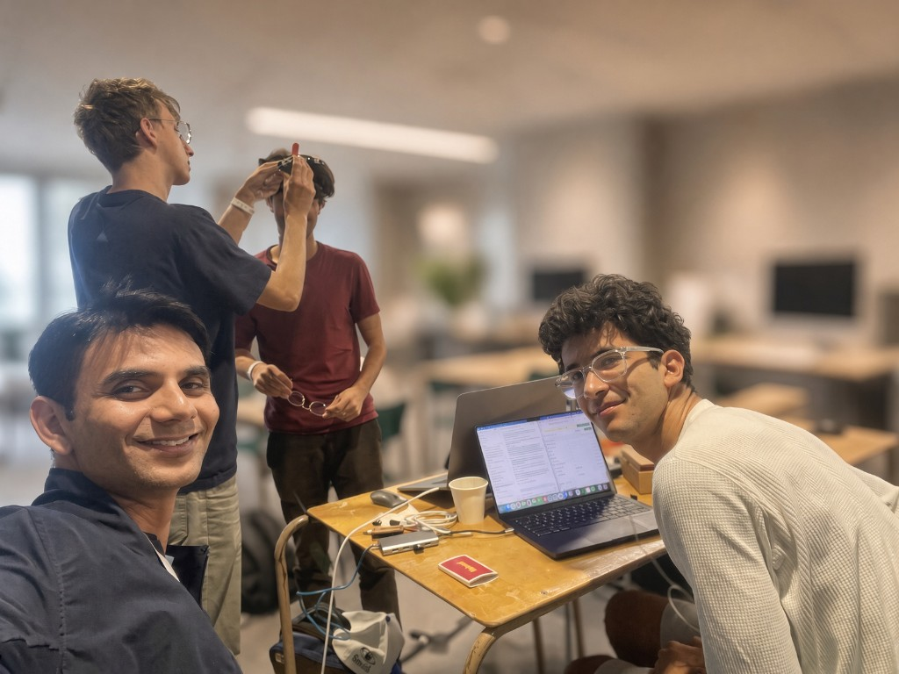
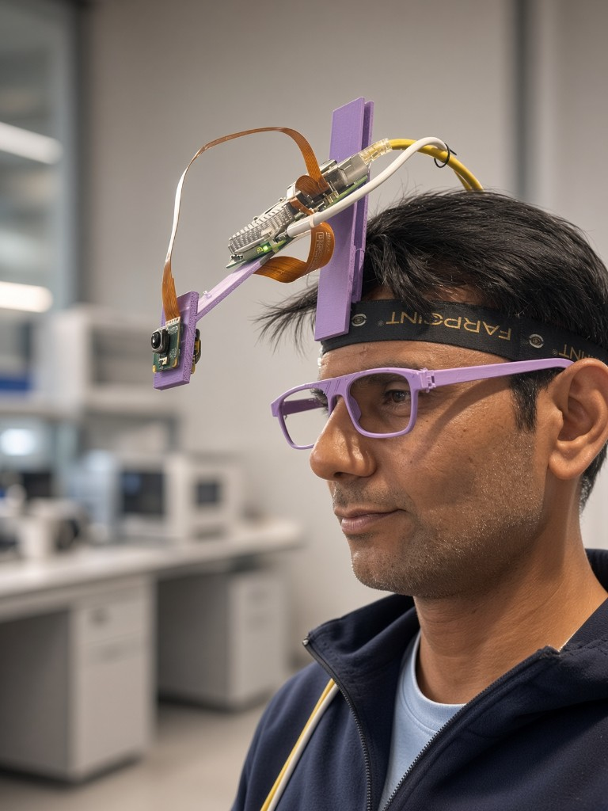
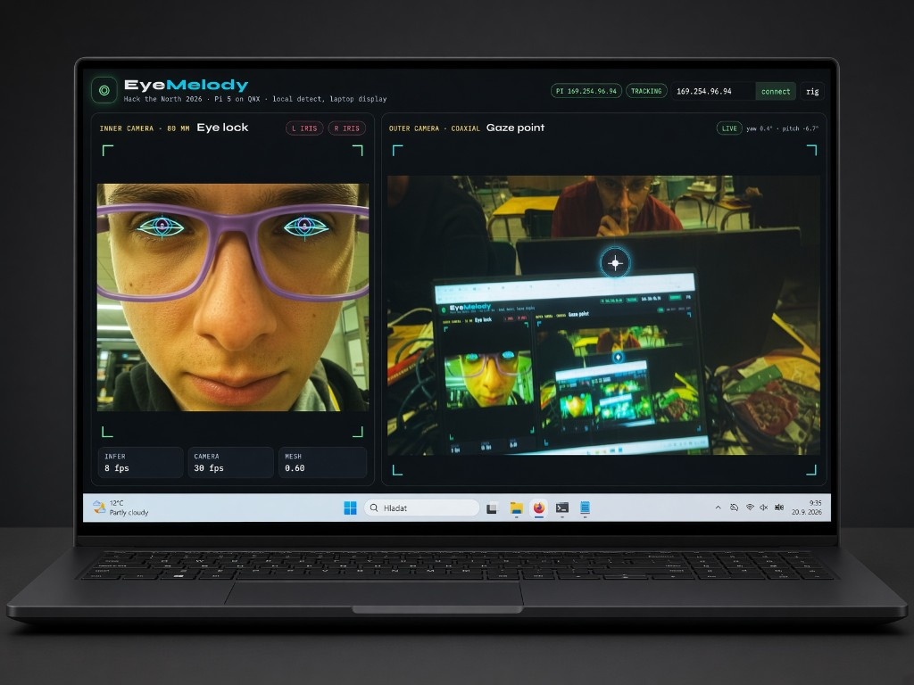
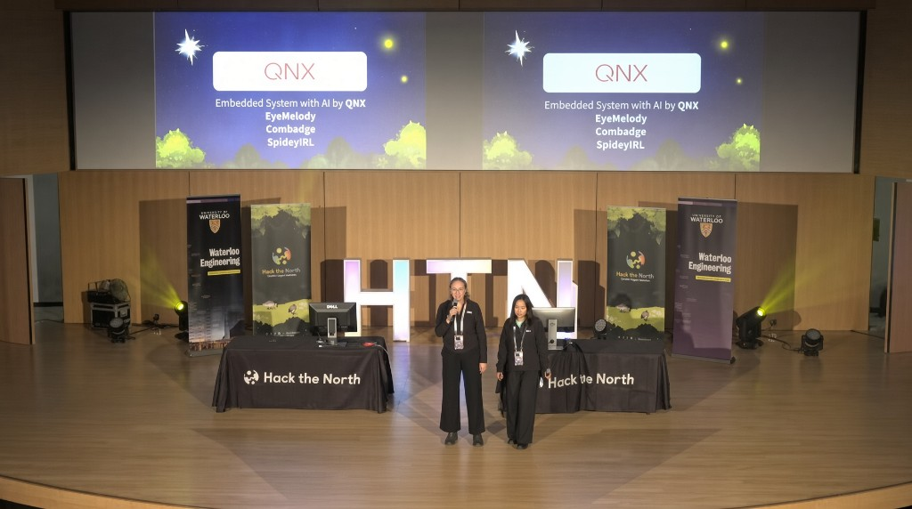

After nearly twenty years of building computer vision systems in industry, I went back to school. Queen’s University’s Master of Management in Artificial Intelligence was meant to reconnect me with the mathematics and practice of AI. I did not expect it to put me in a hall with a thousand students for 36 hours, wearing a 3D-printed camera rig, trying to turn eye movement into melody.
Hack the North is one of Canada’s largest hackathons. This year they received about 7,000 applications and selected around 1,000 participants. More than 350 teams started from scratch and tried to ship a working prototype before the weekend ended. Walking the floor, it felt less like a contest and more like 350 tiny startups, side by side, each chasing something they cared about.
The organization was impressive — transportation, food, mentors, sleeping arrangements, sponsor booths. What mattered most to us, though, were the technical teams from the sponsor companies. When the hardware or the operating system refused to cooperate at two in the morning, there was someone in the room who could help.
The idea I walked in with
I wanted to build around computer vision and gaze. The picture in my head was a pair of smart glasses that looked two ways at once: out at the world, and in at the wearer’s eyes. If you can tell where a person is looking, and you can see what is in front of them, you can start to connect the two. That correlation felt like a foundation for many applications, not just one product.
We eventually became a team of four engineers from very different places and stages of life. One teammate from France brought aerospace engineering. Another, from Slovakia, brought mechanical engineering and unusually strong programming. A first-year computer science student from Calgary brought speed and hunger. I brought years of computer vision and AI. Different ages, different passports, different strengths. That mix was one of the most interesting parts of the weekend.

How the idea became EyeMelody
A gaze tracker is a device. It is not yet a reason. During the hackathon we started asking who this might actually help. People with severe physical disabilities often cannot use their hands. Gaze is still theirs. That thought pulled the project away from a generic tracker and toward a musical instrument.
EyeMelody uses looking as input. The headset tracks where the wearer is gazing. Colored objects in the scene are tied to musical tones. Look at them in sequence, and the tones play in sequence. A melody, made only with the eyes. We wanted to see whether eye movement could become a way of interacting with technology — and a way of expressing oneself.

QNX, a Raspberry Pi, and the hard part
The next problem was practical: what hardware and operating system could we actually get working in a weekend? We found QNX’s platform — a Raspberry Pi 5 running the QNX operating system. Real-time behavior mattered. Gaze tracking only feels like interaction if the loop is tight. A delayed glance is not a glance; it is lag.
Getting the libraries we needed onto that platform was not smooth. We spent a painful stretch on installation and configuration. The QNX technical team stayed with us through it. With their help we eventually had an environment that could run the software we were trying to write.
From there the work was the pipeline. A small neural network identified objects in the scene. Gaze tracking estimated where the wearer was looking. Those two streams had to meet in the real world: this glance, that object, this sound. A lot of the integration happened in C++, which let us join the computer-vision and AI pieces to the embedded system instead of treating them as separate demos. Seeing the full path work — camera, gaze, model, tone — was the most satisfying moment of the project.

What Queen’s MMAI actually changed
The program was not a backdrop. We had worked through machine-learning concepts and a couple of Kaggle competitions, which trained a habit: think about how a model is built, not only what it outputs. The mathematics behind AI and deep learning stopped being atmosphere and became tools. That made it possible to implement the vision pieces rather than drop in a black box and hope.
More broadly, MMAI gave me a way back into technology from an academic angle after many years in industry — and then asked me to use that learning in a room full of students who had grown up building in public.
The QNX challenge
Our team won the QNX-sponsored challenge: “Create an Embedded System with QNX that Uses AI.” The recognition landed because the project sat at the intersection of things I care about: AI, computer vision, embedded systems, and human-computer interaction. We had shown, in a rough but working form, that those pieces could live together on QNX hardware.

The code for the prototype is on GitHub.
What stayed with me
The prize was not the main thing. What impressed me most was the talent, energy, and determination in the younger generation around us. People who were simply passionate about building. That is easy to say from a distance. It is different to sit beside it for a day and a night.
The weekend also reinforced something I have been watching from industry: AI is shortening the path from an idea to a working prototype. Things that used to take months or years to even try can now be tested in a weekend. Accessible hardware, capable models, and people who will stay up to wire a camera to a headband — that combination turns sketches into objects.
Hack the North was a chance to step outside my usual professional environment, learn from a new generation of engineers, and put Queen’s to work in a room that did not care about my resume.
Coming back to school after twenty years was already a turn. Spending a weekend building EyeMelody with three people I had just met made that turn feel worth it. Not because we won a challenge, but because we got to find out, quickly, whether a gaze could become a melody — and because the people around us were already onto the next idea.